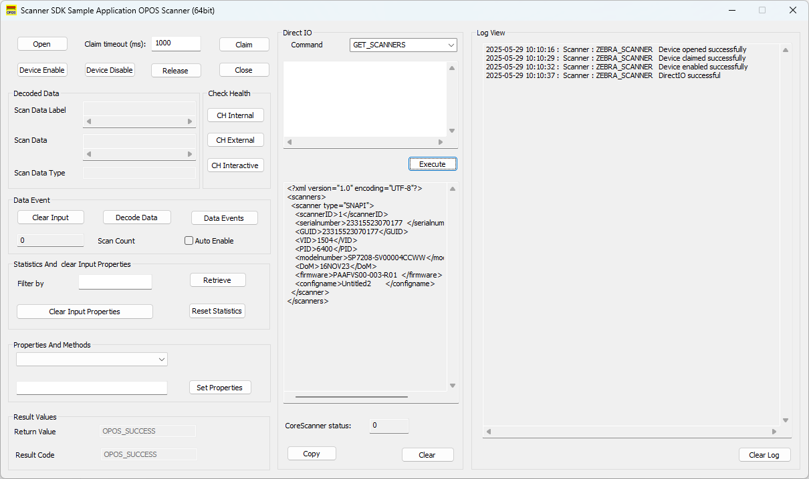

Overview
The OPOS driver does not support any I/O functions directly to the scanner. However, the OPOS sample application exposes management access to an RSM-ready scanner through the Zebra Scanner SDK. Through the DirectIO feature, a POS application communicates directly with the underlying CoreScanner Service.
Information in this chapter is applicable to both scanner and scale devices.
DirectIO Methods
Syntax
LONG DirectIO(
_In_ LONG nCommand,
_Inout_ LONG *lpData,
_Inout_ BSTR *pbstrIOXML
);
DirectIO Method Parameters:
nCommand[in]: Commands to be executed by OPOS Service. Following are the possible values for this parameter.
enum DIO_Opcodes
{
//Common for Scanner and Scale
DIO_GET_SCANNERS = 1,
DIO_RSM_ATTR_GETALL = 5000,
DIO_RSM_ATTR_GET = 5001,
DIO_RSM_ATTR_GETNEXT = 5002,
DIO_RSM_ATTR_SET = 5004,
DIO_RSM_ATTR_STORE = 5005,
DIO_RTA_GET_SUPPORTED = 5500,
DIO_RTA_UNREGISTER = 5502,
DIO_RTA_GET_EVENT_STATUS = 5503,
DIO_RTA_SET_EVENT_STATUS = 5504,
DIO_RTA_SUSPEND = 5505,
DIO_RTA_GETSTATE = 5506,
// Scanner Specific
DIO_SCANNER_UPDATE_FW_DAT = 5016,
DIO_SCANNER_UPDATE_FW_PLUGIN = 5017,
DIO_SCANNER_LOAD_CONFIG = 5020,
//NCR Scanner
NCR_DIO_SCANNER_TONE = 501,
NCR_DIO_SCANNER_RESET = 502,
NCR_DIO_SCANNER_STATUS = 503,
NCR_DIO_SCANNER_DIRECT = 507,
NCR_DIO_SCANNER_NOT_ON_FILE = 508,
//NCR Scale
NCR_DIO_SCALE_STATUS = 601,
NCR_DIO_SCALE_LIVE_WEIGHT = 604,
NCR_DIO_SCALE_DIRECT = 605
};
lpData: Indicates the CoreScanner Status. Refer to the Scanner SDK User's guide for CoreScanner status code description
pbstrIOXML: This value holds input and output arguments for the commands in XML format.
DirectIO Commands
DIO_GET_SCANNERS
This will retrieve all the scanners connected to the system and identified by CoreScanner service. No input XML is required for this command.
OutXml: This contains the raw XML string of all the connected scanners in the format:
<scanners>
<scanner type="mode">
<scannerID>id1</scannerID>
<serialnumber>serial_number</serialnumber>
<GUID>S_N:XXXXXXXXXXXXXXXXXXXXXX</GUID>
<VID>vendor_id</VID>
<PID>product_id</PID>
<modelnumber>model_number</modelnumber>
<DoM>date_of_manufacture</DoM>
<firmware>firmware_version</firmware>
</scanner>
</scanners>
DIO_RSM_ATTR_GETALL
This will retrieve a list of supported RSM attributes of a connected device. The Product Reference Guide specified for the connected scanner contains the definitions of all these attributes.
InXml
<inArgs>
<scannerID>scanner_id</scannerID>
<!-- ScannerID of one of the scanners which could be retrieved by executing DIO_GET_SCANNERS DirectIO command -->
</inArgs>
InOutXml: This contains the raw XML string of all the supported RSM attributes:
<outArgs>
<scannerID>scanner_id</scannerID>
<arg-xml>
<modelnumber>DS8108-XXXXXXXXXXXX</modelnumber>
<serialnumber>serial_number</serialnumber>
<GUID>S_N:XXXXXXXXXXXXXXXXXXXXXXXXXX</GUID>
<response>
<opcode>5000</opcode>
<attrib_list>
<attribute name="">0</attribute>
<attribute name="">1</attribute>
<attribute name="">2</attribute>
<attribute name="">3</attribute>
<attribute name="">4</attribute>
<attribute name="">5</attribute>
...
...
<attribute name="">25102</attribute>
<attribute name="">25103</attribute>
<attribute name="">25104</attribute>
<attribute name="">25105</attribute>
</attrib_list>
</response>
</arg-xml>
</outArgs>
The value of each attribute in the returned XML list can be accessed using the DIO_RSM_ATTR_GET command.
NOTE: Calling this is not necessary if the attributes you wish to SET, or GET are known ahead of time.
DIO_RSM_ATTR_GET
This command can be used to retrieve scanner attribute information including value, data type, and permission. For more information, refer to the Zebra Scanner SDK for Windows Developer's Guide.
InXml
<inArgs>
<scannerID>scanner_id</scannerID>
<cmdArgs>
<arg-xml>
<attrib_list>attribute1[,attribute2,…,attributeN]</attrib_list>
<!-- a list of scanner attribute numbers separated by commas -->
</arg-xml>
</cmdArgs>
</inArgs>
OutXml
<outArgs>
<scannerID>scanner_id</scannerID>
<arg-xml>
<modelnumber>DS8108-XXXXXXXXXXX</modelnumber>
<serialnumber>serial_number</serialnumber>
<GUID>XXXXXXXXXXXXXXXXXXXXX</GUID>
<response>
<opcode>5001</opcode>
<attrib_list>
<attribute>
<id>attribute1</id>
<name></name>
<datatype>F</datatype>
<permission>RWP</permission>
<value>True</value>
</attribute>
</attrib_list>
</response>
</arg-xml>
</outArgs>
DIO_RSM_ATTR_GETNEXT
This will retrieve the value of the next available attribute of the given attribute number. Refer to the Scanner SDK documentation for input XML for this command.
InXml
<inArgs>
<scannerID>scanner_id</scannerID>
<cmdArgs>
<arg-xml>
<attrib_list>3</attrib_list>
</arg-xml>
</cmdArgs>
</inArgs>
OutXml
<outArgs>
<scannerID>scanner_id</scannerID>
<arg-xml>
<modelnumber>DS9208-XXXXXXXXXX</modelnumber>
<serialnumber>XXXXXXXXXXXX</serialnumber>
<GUID>S_N:XXXXXXXXXXXX</GUID>
<response>
<opcode>5002</opcode>
<attrib_list>
<attribute>
<id>4</id>
<name></name>
<datatype>F</datatype>
<permission>RWP</permission>
<value>True</value>
</attribute>
</attrib_list>
</response>
</arg-xml>
</outArgs>
DIO_RSM_ATTR_SET / DIO_RSM_ATTR_STORE
Sets (volatile, cleared after device reboot) or stores (non-volatile, retained after device reboot) attributes respectively, specified in the XML string given in the obj argument. No OutXml for these two commands.
InXml
<inArgs>
<scannerID>scanner_id</scannerID>
<cmdArgs>
<arg-xml>
<attrib_list>
<attribute>
<id>rsm_attribute_number</id>
<datatype>valid_datatype</datatype>
<value>value_maching_datatype</value>
</attribute>
</attrib_list>
</arg-xml>
</cmdArgs>
</inArgs>
The following are the valid values:
- rsm_attribute_number: One of the scanners accepted, writeable attributes numbers.
- valid_datatype: A valid datatype character: F, B, W, D, A, S
- value_matching_datatype: A value that is consistent with the datatype and the datatype range. For example, 'F' is a 'Boolean' value that may be either 'false' or 'true'. A 'B' datatype is 'Byte' which ranges from 0-255.
For example, to disable UPC Code 128, the actual XML string passed into the obj argument would look this:
<inArgs>
<scannerID>1</scannerID>
<cmdArgs>
<arg-xml>
<attrib_list>
<attribute>
<id>7</id>
<datatype>F</datatype>
<value>False</value>
</attribute>
</attrib_list>
</arg-xml>
</cmdArgs>
</inArgs>
DIO_SCANNER_LOAD_CONFIG
This command can be used to update the scanner configuration by specifying the relevant scannerID and the absolute file path, including the filename, created using 123Scan (.scncfg).
InXML:
<inArgs>
<scannerID>1</scannerID>
<cmdArgs>
<arg-string>C:\DS8108 Config.scncfg</arg-string>
</cmdArgs>
</inArgs>
OutXml: None. Instead of OutXml, DirectIO events with the following event types will be received.
- CONFIG_LOAD_START = 17
- CONFIG_LOAD_PROGRESS = 18
- CONFIG_LOAD_END = 19
Possible error scenarios are outlined below.
| Failure |
Error Code |
| File does not exist |
ERROR_INLVAID_CONFIG_FILE (601) |
| Incorrect extension |
ERROR_INLVAID_CONFIG_FILE (601) |
| Self-hash failure |
ERROR_INLVAID_CONFIG_FILE (601) |
| Incompatible device |
ERROR_INCOMPATIBLE_CONFIG_FILE (602) |
| XML syntax validation failure |
ERROR_CONFIG_FILE_SYNTAX_VALIDATION_FAILED (603) |
DIO_SCANNER_UPDATE_FW_DAT / DIO_SCANNER_UPDATE_FW_PLUGIN
This command can be used to update the scanner firmware by specifying the relevant scannerID and the absolute path of the firmware file (PLUGIN or DAT), including the filename.
InXML:
<inArgs>
<scannerID>1</scannerID>
<cmdArgs>
<arg-string>C:\DS3678-STANDARD.SCNPLG</arg-string>
<arg-int>2</arg-int>
</cmdArgs>
</inArgs>
OutXml: None. Instead of OutXml, DirectIO events with the following event types will be received.
- SCANNER_UF_SESS_START = 11
- SCANNER_UF_DL_START = 12
- SCANNER_UF_DL_PROGRESS= 13
- SCANNER_UF_DL_END= 14
- SCANNER_UF_SESS_END= 15
- SCANNER_UF_STATUS= 16
Possible error scenarios are outlined below.
| Failure |
Error Code |
| ERROR_FW_INVALID_DATFILE |
Invalid firmware file (500) |
| ERROR_FW_UPDATE_FAILED_IN_SCN |
FW Update failed in scanner (501) |
| ERROR_FW_READ_FAILED_DATFILE |
Failed to read DAT file (502) |
| ERROR_FW_UPDATE_INPROGRESS |
Firmware Update is in progress (cannot proceed another FW Update or another command) (503) |
| ERROR_FW_UPDATE_ALREADY_ABORTED |
Firmware update is already aborted (504) |
| ERROR_FW_UPDATE_ABORTE |
FW Update aborted (505) |
| ERROR_FW_SCN_DETTACHED |
Scanner is disconnected while updating firmware (506) |
| ERROR_FW_UPDATE_NOT_SUPPORTED |
Device doesn't support firmware update (507) |
| STATUS_FW_SWCOMP_RESIDENT |
The software component is already resident in the scanner (600) |
NCR_DIO_SCANNER_NOT_ON_FILE
This command is used to execute the NCR "Not on File" tone pattern configured through Registry key value.
This registry key can only be configured for the device, not for the logical device. "Computer\HKEY_LOCAL_MACHINE\SOFTWARE\Zebra\Zebra Scanners\OPOS\Scanner" - NcrScanNOFPattern
NCR_DIO_SCANNER_RESET
This command is used to reset the device.
NCR_DIO_SCANNER_STATUS
This command is used to get the IBM USB status bytes of the scanner. Status bytes are given as a string.
NCR_DIO_SCANNER_DIRECT
This command is used to execute direct IO commands GetAll, Get, GetNext, Set and Store attributes directly without the corresponding direct IO command for these operations. Direct IO OpCode for these operations is passed as an attribute in the InXml.
InXml
<inArgs>
<scannerID>scanner_id</scannerID>
<opcode>5001</opcode>
<cmdArgs>
<arg-xml>
<attrib_list>1</attrib_list>
</arg-xml>
</cmdArgs>
</inArgs>
OutXml
<?xml version="1.0" encoding="UTF-8"?>
<outArgs>
<scannerID>scanner_id</scannerID>
<arg-xml>
<modelnumber>DS9208-XXXXXXXXXXX</modelnumber>
<serialnumber>XXXXXXXXXXXXX</serialnumber>
<GUID>S_N:XXXXXXXXXXXXXX</GUID>
<response>
<opcode>5001</opcode>
<attrib_list>
<attribute>
<id>1</id>
<name></name>
<datatype>F</datatype>
<permission>RWP</permission>
<value>True</value>
</attribute>
</attrib_list>
</response>
</arg-xml>
</outArgs>
NCR_DIO_SCALE_LIVE_WEIGHT
This command is used to get the live weight value of the scale. No need of providing an InOutXml argument.
NCR_DIO_SCALE_STATUS
This command is used to get the IBM USB status bytes of the scale. Status bytes are given as a string. No need of providing an InOutXml argument.
NCR_DIO_SCALE_DIRECT
This command is used to execute direct IO commands GetAll, Get, GetNext, Set and Store attribute directly without the corresponding direct IO command for these operations. Direct IO OpCode for these operations is passed as an attribute in the InXml.
InXml
<inArgs>
<scannerID>scanner_id</scannerID>
<opcode>5001</opcode>
<cmdArgs>
<arg-xml>
<attrib_list>34</attrib_list>
</arg-xml>
</cmdArgs>
</inArgs>
OutXml
<outArgs>
<scannerID>scanner_id</scannerID>
<arg-xml>
<modelnumber>DS9208-XXXXXXXXXXX</modelnumber>
<serialnumber>XXXXXXXXXXXXXXX </serialnumber>
<GUID>S_N:XXXXXXXXXXXXXXXXXXXX</GUID>
<response>
<opcode>5001</opcode>
<attrib_list>
<attribute>
<id>34</id>
<name></name>
<datatype>B</datatype>
<permission>RWP</permission>
<value>1</value>
</attribute>
</attrib_list>
</response>
</arg-xml>
</outArgs>
Real Time Alerts (RTA)
Real Time Alerts (RTA) are preselected events that are monitored by a scanner device. When a selected statistic has reached a specified value or when a selected event occurs, it is then reported by the scanner device to the host as an alert.
For more information, see Real Time Alerts (RTA) User Guide
The OPOS driver uses DirectIO commands to invoke Real-Time Alerts (RTA) methods on the scanner or cradle device and utilizes DirectIO events to receive notifications when an RTA event is triggered by the scanner. Because the Zebra OPOS Service Object automatically registers for CoreScanner notification events during the initial Open call, the host application does not need to perform manual registration to receive RTA events.
Return Value
If the function succeeds, the return value will be OPOS_SUCCESS. Else other relevant OPOS result codes defined in UPOS Specification will return.
Using OPOS Sample Application to send DirectIO Commands
DirectIO operations can be done using the panel highlighted in red, as shown in the screenshot given below.
The required DirectIO command can be selected from the drop-down list named as the Command.
The OutXML corresponding to the selected DirectIO command can be retrieved by clicking on the Execute button.

Figure 6: OPOS Sample Application - DirectIO Command Execution
To send Direct I/O commands using the OPOS sample application:
- Connect a Zebra scanner and switch to a management-enabled host mode such as IBM OPOS, IBM Hand-held, IBM Table-top, or SNAPI.
- Open the OPOS sample application for Scanner.
- Click Open and select ZEBRA_SCANNER as the service object name.
- Click Claim.
To retrieve a list of all the scanners connected to the PC:
- Select DIO_GET_SCANNERS as DirectIO opcode from the Direct I/O section.
- Click Execute. The Direct I/O OutXml text box populates with XML with all the attached scanners.